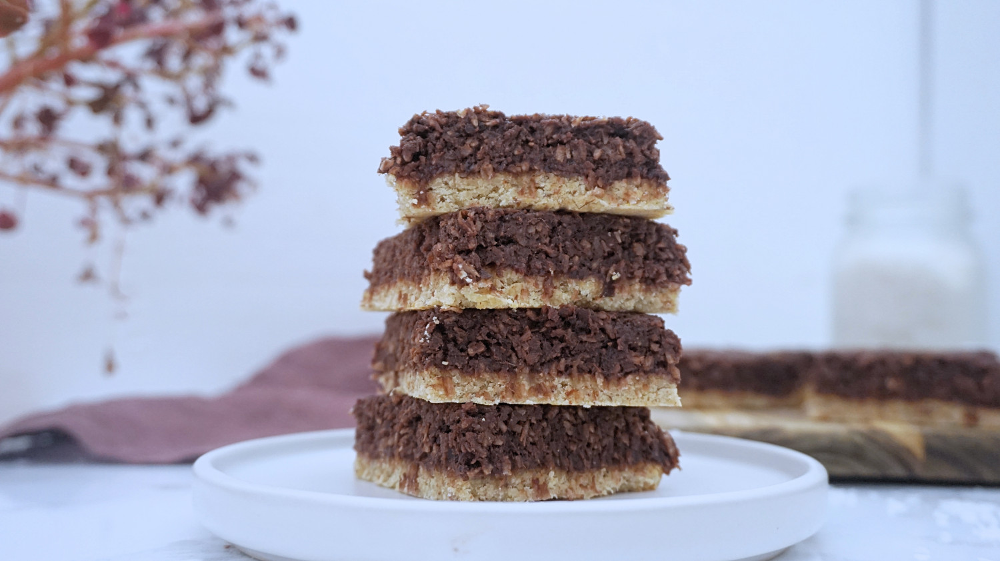

Back to Home Page
Home
My fovarite cake is a Cocoaslice

Cocoaslice from camilladrabo.dk
Recipe - In Danish
Ingredienser
Bund
- 60g havregryn
- 50g mandler
- 35g Marcipan
- 2 spsk. kokosolie
- 1 æg
Topping
- 160g dadler
- 160g kokosmel
- 70g Marcipan
- 2 dl vand
- 2 spsk. kokosolie
- 5-6 spsk. brygget kaffe
- 3 spsk. kakaopulver
Øvrigt
2-3 spsk. Hindbærmarmelade
Fremgangsmåde
- Lav bunden ved at blende mandler, havregryn, marcipan, æg og kokosolie godt sammen.
- Kom massen på et stykke bagepapir og form til en firkant. Bunden skal ikke være mere en 4-5 mm. Bag
bunden
ved 200 grader i 10-12 minutter. Lad efterfølgende bunden køle helt af på en rist.
- Lav nu toppingen ved at blende dadler og vand til en ensformigt masse. Kom dadelmassen i en skål sammen
med
kokosolie, revet marcipan, kokosmel, kakao og friskbrygget lidt afkølet kaffe og rør det hele godt
sammen.
Smag massen til og juster evt. med lidt mere kaffe.
- Kokosmassen skal hænge sammen, dog ikke være tør, men den skal kunne formes og blive stående. Så virker
den
for blød, kan I tilføje lidt ekstra kokosmel.
- Smør den afkølet bund med lidt hindbærmarmelade og form kokosmassen i samme størrelse som bunden. Kom
kokosmassen ovenpå bunden og lad den stå nogle timer så den kan samle sig – gerne til dagen efter.
- Skær kagen i mindre snitter og server.
Kilde Henvisning
camilladrabo.dk